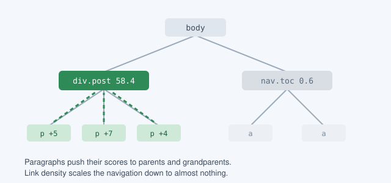

How reader mode decides what to keep
Every major browser ships a button that strips a web page down to its text. Press it on a news article and the navigation, the advertisements and the comment thread disappear, leaving a clean column of prose. It looks like magic, but the heuristics behind it are surprisingly small and, once you know them, rather charming.
This post walks through the approach taken by Mozilla's Readability library, the engine behind Firefox's Reader View, which we recently ported to a functional language. None of it relies on machine learning. It is a set of rules of thumb about how people write HTML, refined over more than a decade of real pages.
Step 1: throw away the obvious
The first pass removes elements that are almost never part of an article: scripts, styles, and anything whose class or id matches words like sidebar, comment, footer, sponsor or popup. A short list of positive words such as article, body and content can rescue an element that would otherwise be dropped. Containers made only of inline text are turned into paragraphs, so that the scoring pass has something consistent to count.
Step 2: score the paragraphs
Next, every paragraph with at least 25 characters awards points to its parent and grandparent. A paragraph earns one point for existing, one point per comma, and one point per hundred characters of text, up to three. Commas are a crude but effective signal: prose has them, while navigation menus and button labels do not.
score = 1
+ commas(text)
+ min(floor(length(text) / 100), 3)
parent.score += score
grandparent.score += score / 2Ancestors further up receive smaller shares, so the points pool in the element that directly contains the bulk of the text. Each candidate also starts with a bonus or penalty based on its tag and its class names, as the table below shows.
| Signal | Example | Starting score |
|---|---|---|
| Positive class or id | article, entry, story | +25 |
| Negative class or id | comment, sidebar, promo | −25 |
Tag div | Generic container | +5 |
Tag pre, td, blockquote | Text-bearing block | +3 |
Tag ul, ol, form | Lists and forms | −3 |
Tag h1 to h6, th | Headings | −5 |
Step 3: punish links
A block that is mostly links is probably navigation, however many commas it has. So each candidate's score is multiplied by one minus its link density, the share of its text that sits inside anchors. A sidebar of headlines ends up near zero, while a paragraph with a single citation barely changes.

Step 4: gather the siblings
The highest-scoring element wins, but an article rarely lives in a single container. Readability looks at the winner's siblings and pulls in any that score well enough, or that are paragraphs with plenty of text and few links. A cleaning pass then removes leftovers inside the article: share buttons, empty containers, and small tables full of links.
If the result is too short, the whole process runs again with the rules relaxed, first keeping elements with suspicious class names and then ignoring class weights altogether. Only if every attempt comes back short does the library give up and return the longest result it found.
Why it holds up
What makes the approach durable is that it measures how text is written rather than how a page is built. Sites redesign their markup constantly, but articles keep having paragraphs, paragraphs keep having commas, and navigation keeps being made of links. A heuristic tuned to those habits has aged far better than anyone expected.
or use RSS